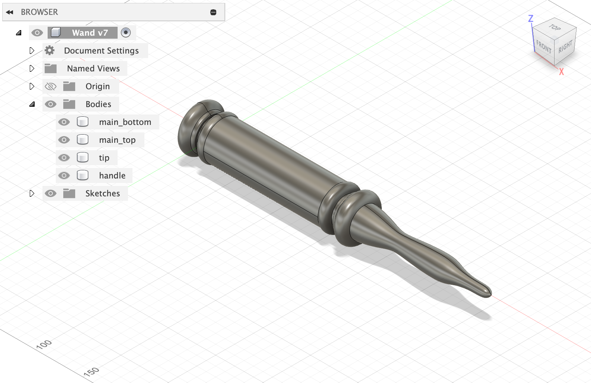
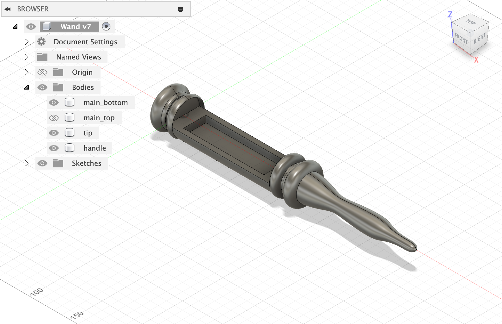
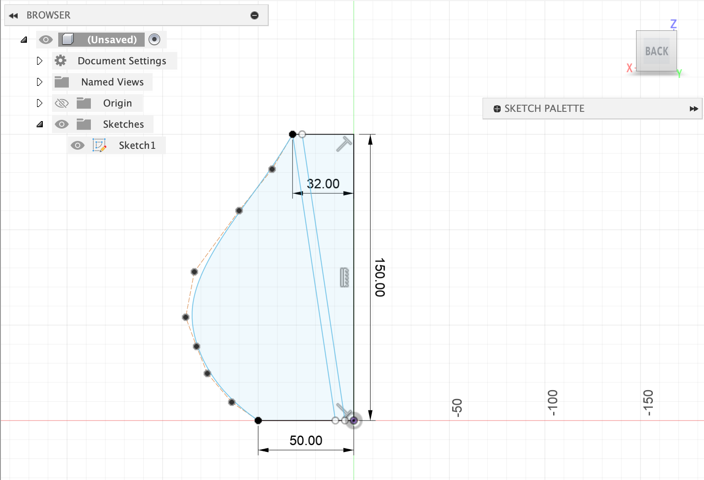
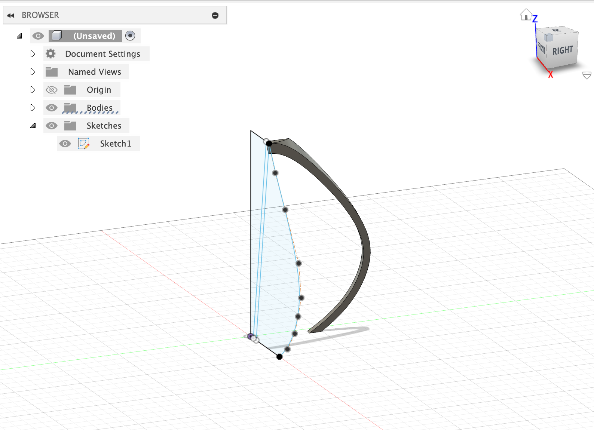
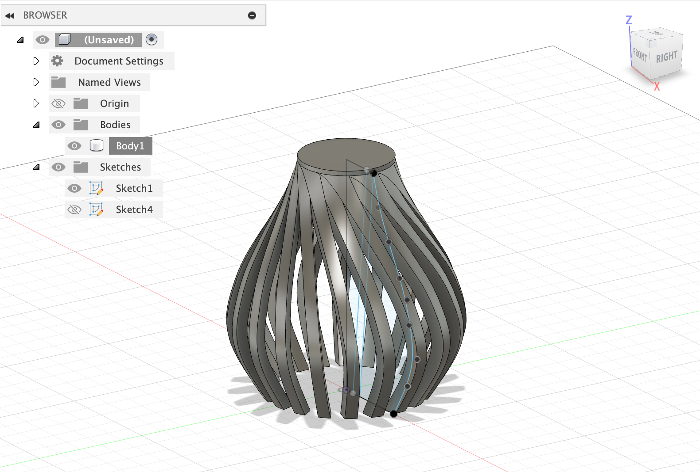

<div class="textcontainer">
<p class="margin"></p>
<h3>Final Project</h3>
<h4>Lumos, Inertial Wand Interface for Real-Time Light Control</h4>
<p><br></p>
<div class="video-container">
<video controls muted>
<source src="mov2.mp4" type="video/mp4">
Your browser does not support the video tag.
</video>
</div>
<p><br></p>
<h4>Motivation</h4>
I wanted to bridge my understanding between hardware and software, where one component
of a project has the ability to control another object. I noticed that I often would
not want to get out from a comfortable position in studying to dim or brighten lights.
Therefore, inspired by Hogwarts, I wanted to come up with a magical solution where the
lights in my room could be controlled by a hand-gestured wand. A sharp flick
of the wand would light up a designated circuit.
<p><br></p>
<h4>Part 0: Setup</h4>
Here is everything you will need to build this project:
<ol>
<li>2 Microcontrollers (ESP32 or XIAO ESP32 are great)</li>
<li>1 ITG/MPU Accelerometer</li>
<li>1 Resistor (1k<span>&#8486;</span> is sufficient)</li>
<li>1 LED</li>
<li>2 Li battery backs with female insertions</li>
<li>2 male wire insertions compatible with the Li battery female wires</li>
<li>General pin-socket wires (8 for the accelerometer, and more for power)</li>
<li>Arduino IDE Software</li>
<li>1 ESP32 plug-in cable (to upload the code from the Arduino IDE to the microcontrollers)</li>
<li>PrusaSlicer, PrusaSlicer software, and PLA Material</li>
</ol>
<p><br></p>
<h4>Part 1: Wand and Light</h4>
You can download the wand and lamp files directly by clicking this button:
<p class="margin"> </p>
<div class="flexrow">
<a id="btn" href="./week13.zip" download>Download Wand dxf and Lamp gcode
</a>
</div>
<p class="margin"> </p>
To make the wand from scratch, open up Autodesk Fusion to design the wand. The
wand has four main parts:
<ol>
<li>Main, Bottom: a half-cylinder where all the circuitry would go</li>
<li>Main, Top: a half-cylinder acting as a cover for the circuit</li>
<li>Handle: a doorknob-looking end to the wand, for fastening</li>
<li>Tip: a decorative piece for the other end, to make it look like a wand</li>
</ol>
<p><br></p>
<div class="img-container">
<p></p>
<p></p>
</div>
<p><br></p>
Here are all the parameters of the wand, as well as some photos of the
wand. The parameters were based on my measurements so that the
circuit would fit within the main cylindrical-shaped container.
'main circuit' refers to the cutout within the cylinder for the circuitry.
'main wand' refers to the overall cylinder-shape that holds the circuit.
<p><br></p>
<table class="myTable">
<tr><th>Name</th><th>Value (mm)</th>
<tr><td>main_wand_diameter</td><td>40</td>
<tr><td>main_wand_length</td><td>130</td>
<tr><td>main_circuit_width</td><td>28</td>
<tr><td>main_circuit_length</td><td>100</td>
<tr><td>handle_diameter</td><td>40</td>
<tr><td>handle_length</td><td>33</td>
<tr><td>tip_length</td><td>150</td>
</table>
<p><br></p>
I then saved the bodies individaully using 'Save Mesh'. This automatically opens
up a 3D printing software called PrusaSlicer for me. If you don't have Prusa, download it for your OS and
select the appropriate Prusa model you will be using. Shown below is how
my handle looks in Prusa. I made the following edits for each body:
<ol>
<li>Rotate the body so its mostly connected to the base of the Prusa machine.</li>
<li>Select 'General: PLA' for material (use this filament in your Prusa machine!)</li>
<li>Select 'Infill: 15%' for infill</li>
<li>Select 'Support on build plate only' to allow for better printing</li>
</ol>
We are now done with the wand! Let's move onto the lamp.
I opened a new sketch in Autodesk and drew a sketch for the side of the lamp.
The dimensions are shown in the image below, but feel free to edit these as you desire.
After this, I used the Revolver tool to revolve it and make an uncut 3D dimensional
lamp. Finally, I Extruded the slanted rectangle in the sketch to intersect with the
3D dimensional lamp. This cut out an individual part of the lamp.
<p><br></p>
<div class="img-container">
<p></p>
<p></p>
</div>
<p><br></p>
Next, I used the Circular Pattern tool to revolve this individual piece around.
The piece on the left was my final design after 'stretching' some of the dimensions
out from the photos above. After this, I inserted the mesh to PrusaSlicer, selected the
same edits (PLA, infill, supports) as with the wand, and downloaded the gcode for printing.
<p><br></p>
<div class="img-container">
<p></p>
<img src="lamp4.png">
</div>
<p><br></p>
<h4>Part 2: Circuit</h4>
Let's now build the two circuits. TODO
<p><br></p>
<h4>Part 3: Code</h4>
You'll now want to begin coding. First, we need to get the MAC address of the receiver microcontroller
(ie the microcontroller hooked up to the LED circuit). Open an Arduino IDE file and copy-paste the code below into there.
Upload this code to that microcontroller
and read the output from the Serial monitor for its MAC address. You may need to 'Boot' and 'Enable' so
that it can output it, if it does not output automatically.
If you want the source code, it comes from <a href="https://randomnerdtutorials.com/esp-now-esp32-arduino-ide/">this</a> website.
<p><br></p>
<div class="code-box">
<pre><code class="language-arduino">
#include WiFi.h
#include esp_wifi.h
void readMacAddress(){
uint8_t baseMac[6];
esp_err_t ret = esp_wifi_get_mac(WIFI_IF_STA, baseMac);
if (ret == ESP_OK) {
Serial.printf("%02x:%02x:%02x:%02x:%02x:%02x\n",
baseMac[0], baseMac[1], baseMac[2],
baseMac[3], baseMac[4], baseMac[5]);
} else {
Serial.println("Failed to read MAC address");
}
}
void setup(){
Serial.begin(115200);
WiFi.mode(WIFI_STA);
WiFi.STA.begin();
Serial.print("[DEFAULT] ESP32 Board MAC Address: ");
readMacAddress();
}
void loop(){
}
</code></pre>
</div>
<p><br></p>
Next, open a new Arduino file, paste this code in, and upload it
to the same microcontroller.
<p><br></p>
<div class="code-box">
<pre><code class="language-arduino">
// PHYS 70 Receiver Microcontroller
// Imports and Installs
#include esp_now.h
#include WiFi.h
// Variables
int ledPin = 23;
typedef struct struct_message {
float a;
float b;
float c;
} struct_message;
struct_message myData;
// Callbacks
void OnDataRecv(const uint8_t * mac, const uint8_t *incomingData, int len) {
memcpy(&myData, incomingData, sizeof(myData));
Serial.print("Received: ");
Serial.println(myData.a);
if (myData.a > 8) {
Serial.println("Low");
digitalWrite(ledPin, LOW);
} else {
Serial.println("High");
digitalWrite(ledPin, HIGH);
}
}
// Function: Setup
void setup() {
// Initialize Serial
Serial.begin(115200);
// Initialize ledPin, WiFi
pinMode(ledPin, OUTPUT);
WiFi.mode(WIFI_STA);
// Initialize ESP-NOW
if (esp_now_init() != ESP_OK) {
Serial.println("Error initializing ESP-NOW");
return;
}
// Initialize Callback
esp_now_register_recv_cb(esp_now_recv_cb_t(OnDataRecv));
}
// Function: Loop
void loop() {
}
</code></pre>
</div>
<p><br></p>
Finally, open a third Arduino file, paste this code in, and upload it
to the sender microcontroller. You'll need to unplug the cable and plug it into the sender microcontroller
to upload.
<p><br></p>
<div class="code-box">
<pre><code class="language-arduino">
// PHYS 70 Sender Microcontroller
// Imports and Installs
#include esp_now.h
#include WiFi.h
#include Adafruit_MPU6050.h
#include Adafruit_Sensor.h
// Variables
unsigned long lastTime = 0;
const unsigned long interval = 100;
uint8_t broadcastAddress[] = {0XC0, 0X5D, 0X89, 0XAF, 0XE8, 0X6C};
typedef struct struct_message {
float a;
float b;
float c;
} struct_message;
struct_message myData;
esp_now_peer_info_t peerInfo;
// Callbacks
void OnDataSent(const uint8_t *mac_addr, esp_now_send_status_t status) {}
// Classes
class MPU {
public:
Adafruit_MPU6050 mpu;
unsigned long mpuLastTime = 0;
const unsigned long mpuInterval = 100;
sensors_event_t a, g, temp;
MPU() {
}
void GetMPUData() {
mpu.getEvent(&a, &g, &temp);
Serial.print("Acceleration X: ");
Serial.print(a.acceleration.x);
Serial.print(", Y: ");
Serial.print(a.acceleration.y);
Serial.print(", Z: ");
Serial.print(a.acceleration.z);
Serial.println(" m/s^2");
}
};
// Objects
MPU myMPU;
// Function: Setup
void setup() {
Serial.begin(115200);
// Initialize WiFi
WiFi.mode(WIFI_STA);
// Initialize ESP-Now and Peer Info
if (esp_now_init() != ESP_OK) {
Serial.println("Error initializing ESP-NOW");
return;
}
esp_now_register_send_cb(OnDataSent);
memcpy(peerInfo.peer_addr, broadcastAddress, 6);
peerInfo.channel = 0;
peerInfo.encrypt = false;
if (esp_now_add_peer(&peerInfo) != ESP_OK) {
Serial.println("Failed to add peer");
return;
}
// Initialize MPU
while (!myMPU.mpu.begin()) {
if (millis() - myMPU.mpuLastTime > myMPU.mpuInterval) {
myMPU.mpuLastTime = millis();
Serial.println("Failed to find MPU6050 chip");
}
}
myMPU.mpu.setAccelerometerRange(MPU6050_RANGE_8_G);
myMPU.mpu.setGyroRange(MPU6050_RANGE_500_DEG);
myMPU.mpu.setFilterBandwidth(MPU6050_BAND_5_HZ);
Serial.println("Successfully found MPU6050 chip");
}
// Function: Loop
void loop() {
if (millis() - lastTime > interval) {
lastTime = millis();
// get MPU Data
myMPU.GetMPUData();
// format MPU data into message
myData.a = myMPU.a.acceleration.x;
myData.b = myMPU.a.acceleration.y;
myData.c = myMPU.a.acceleration.z;
// send message
esp_err_t result = esp_now_send(broadcastAddress, (uint8_t *) &myData, sizeof(myData));
if (result == ESP_OK) {
Serial.println("Success sending the data");
}
}
}
</code></pre>
</div>
<p><br></p>
</div>